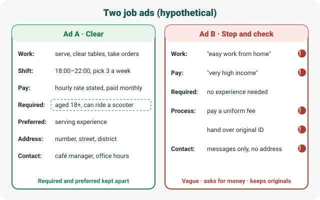

K7 · Self-directed learning and career development › Level 2 Starting
Read part-time and internship job ads to choose well and avoid traps
This lesson completes Sheet 2: Job ad checklist in your Job-ready file. Print template.
1. Objectives
- Separate required and preferred criteria in a job ad, then score your fit.
- Spot 3 signs to stop: vague information, asking for money, keeping original documents.
2. Retrieval warm-up
- Which circles make up the three-circle map?
- Name 2 kinds of small test for a job direction.
Answers
- Like doing; can do, with evidence; real conditions.
- Talking to someone in the job, trying the work, trying a course, making a small product.
Review: Know yourself, choose a direction.
3. Explanation
A good job ad answers 5 questions: what the work is, where, when, how you are paid, and who to contact. If one is missing, write it down to ask.
Step 1. Separate the criteria. Read the "Requirements" section and split it into two columns:
- Required: without it, you will not be hired. For example: minimum age, able to work evenings.
- Preferred: nice to have. Often marked "preferred", "a plus" or "an advantage".
If you lack a few preferred items, you should still apply.
Step 2. Score your fit. For each required item, write Yes or Not yet. If you meet all required items, apply. If you lack one small item, you can ask first.
Step 3. Check for signs to stop.

Three signs to stop
- Very high pay, but the work is not described.
- A request for money: application fee, uniform fee, deposit.
- A request to keep your original ID or certificates.
- Ask about the daily tasks, shifts and how pay works.
- Do not pay. Ask for the details in writing.
- Hand over copies only. Keep your originals.
The last two signs are common warning signs worldwide. In some countries they are also illegal. Vietnam's Labour Code, for example, bans employers from keeping original identity papers or certificates. It also bans requiring workers to give money or property as security. Check the labour law or the labour office where you live.
If you are under 18, extra rules usually apply. Take someone from home with you the first time you visit an employer.
Example source: Vietnam Labour Code 2019, consolidated text 18/VBHN-VPQH of 12/02/2026, Articles 16, 17, 143. Checked 14/11/2026. This is not legal advice.
4. Workplace example
Hypothetical scenario. Mia, a second-year university student, reads this ad: "Part-time cashier, neighbourhood mini-market. Shift 17:00–22:00. Requirements: aged 18+, careful, available at weekends. Preferred: can use a POS terminal. Hourly pay, paid on the 5th of each month."
Mia fills in her job ad checklist:
| Criterion | Type | Mia |
|---|---|---|
| Aged 18+ | Required | Yes |
| Careful | Required | Yes (class treasurer for 1 year) |
| Available at weekends | Required | Yes |
| Can use a POS terminal | Preferred | Not yet |
The ad answers all 5 questions except the exact address. There are no signs to stop. Mia applies and writes her questions: "What is the store's address? Is there training on the POS terminal?"
Why this works: Mia does not skip the ad just because she lacks one preferred item. She also has questions ready for the interview.
5. Practice
Hypothetical scenario. A social media post says: "Work-from-home data entry. Earn a very high monthly income, no experience needed. Quick sign-up: pay a small account activation fee. Message us to get started."
Fill in the job ad checklist. Which of the 5 questions does the ad answer? Are there signs to stop? What will you do?
Hint 1
Look in the ad: what exactly is the work? Where? Who pays? Who do you contact, and is there an address?
Hint 2
Compare with the 3 signs: unusually high pay, asking for money, keeping documents.
Model answer
- 5 questions: only "what the work is", and that is very vague. No workplace, employer, payment method or named contact.
- Signs to stop: very high pay for work needing no experience; a request to pay a fee.
- What to do: do not pay, and do not send photos of your documents. Skip this ad. If you like, report the post to the platform.
(The ad is hypothetical, for illustration.)
6. Self-check
Choose an answer. Every option has an explanation.
Question 1. A job ad says: "Conversational Spanish preferred". Your Spanish is weak. What should you do?
-
Not quite. This is a preferred item, not a required one. You can still be hired.
-
Correct. Correct. Missing a few preferred items is no reason not to apply.
-
Not quite. Every CV line must be backed by a real example. A false line shows up in the interview.
Question 2. The café owner says: "Give me your original ID card. I'll return it when you leave." What does this mean?
-
Not quite. It is a common warning sign. In Vietnam, for example, the Labour Code bans it.
-
Correct. Correct. Keeping a worker's original ID is a warning sign, and illegal in some countries.
-
Not quite. High pay does not make the practice safe, or legal where it is banned.
Question 3. Which ad answers all 5 questions: what, where, when, how you are paid, who to contact?
-
Not quite. It does not say what, where or when. Contact is by message only.
-
Correct. Correct. It covers the work, address, hours, pay method and contact person.
-
Not quite. The work is vague and the pay is suspiciously high.
Question 4. An employer asks you to pay a "place-holding fee" before you start. What should you do?
-
Not quite. A small amount is still money given as security, a key warning sign.
-
Correct. Correct. Asking for money is one of the 3 signs to stop.
-
Not quite. A receipt does not make the request safe. The best choice is not to pay.
7. Reflection
- Have you ever seen a job ad with a sign to stop? What did you do?
- Among the required criteria common in your chosen direction, which do you still lack?
8. Real-world application
In the next 7 days, find 3 job ads that match the 2 directions on Sheet 1. Fill in a job ad checklist for each. Choose 1 ad to write a CV for in the next lesson.
9. Metadata
| skill | K7 · Self-directed learning and career development |
|---|---|
| level | Level 2 · Starting |
| group | N2 |
| framework_map | WEF: Curiosity and lifelong learning; CSfW: 1a Manage career and work life; 1b Work with roles, rights and protocols; NACE: Career and Self-Development (reference only) |
| original | Vietnamese version |
| updated | 2026-11-14 |
Finish the lesson
Mark it as done and the site suggests reviews after 1, 3 and 7 days. The data stays on your device only.
Suggested reviews: